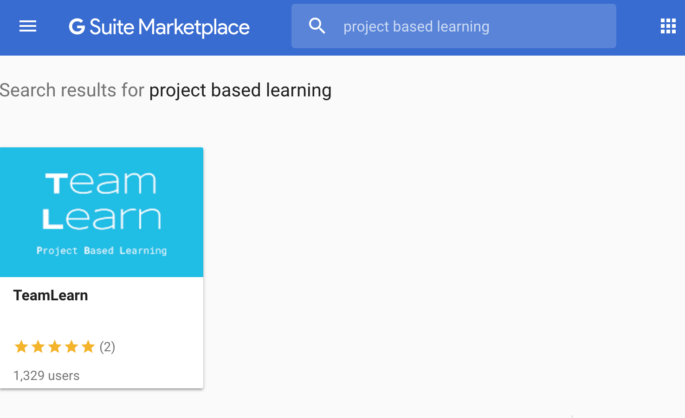
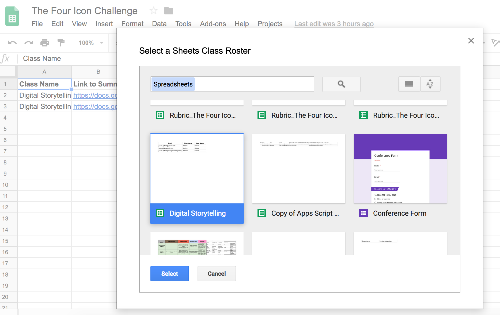
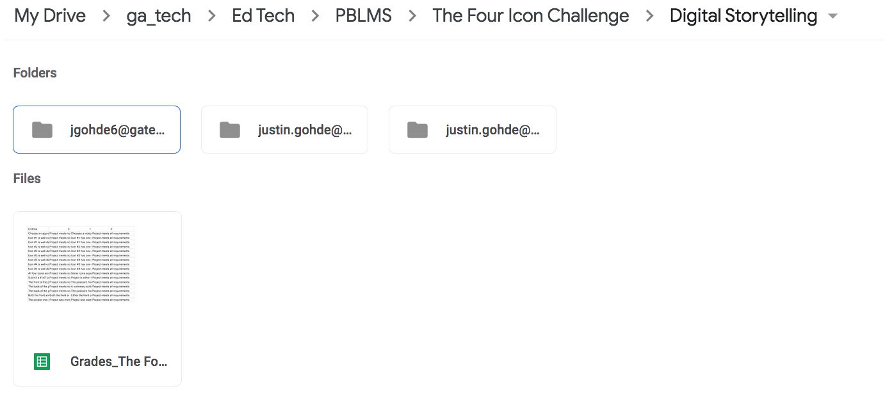
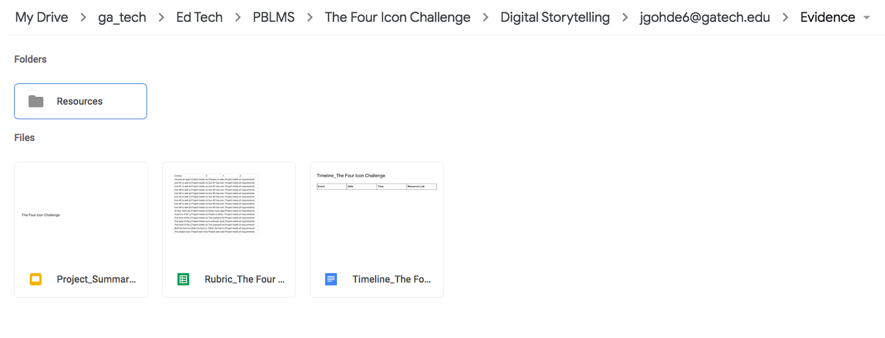
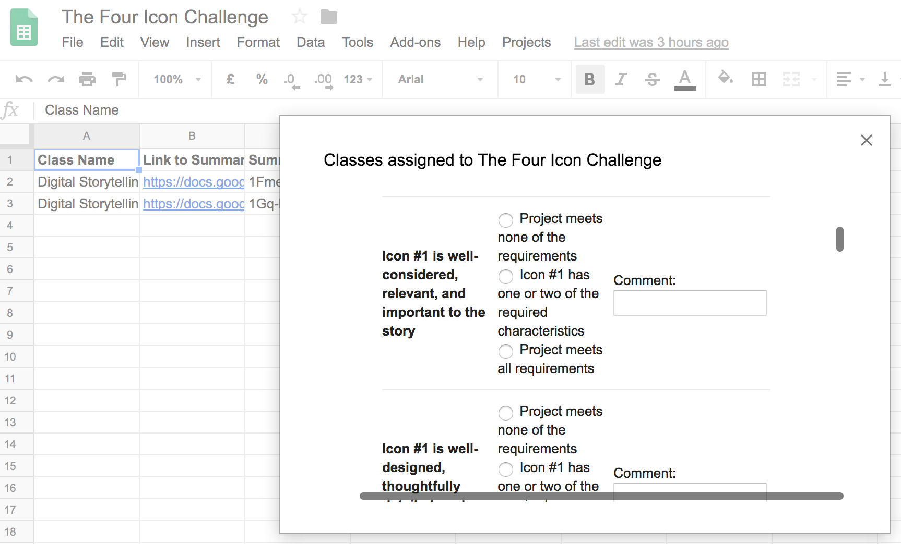
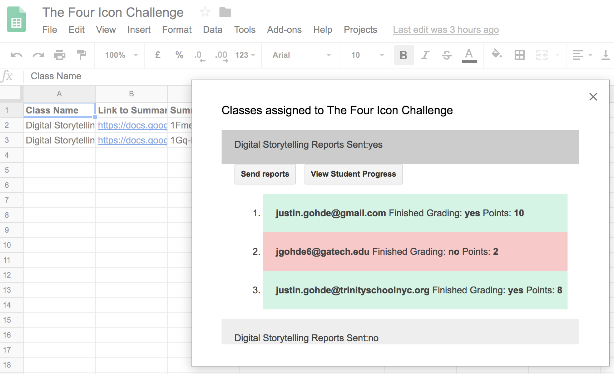

About PBLMS
PBLMS is a Project-based Learning Management System based on best practices in PBL. This Google Sheets Add-on helps eliminate the workflow concerns keeping teachers from implementing robust project-based learning in their classrooms while simultaneously improving the quality of project-based learning for students. PBLMS can support Project-based Learning in any discipline!
PBLMS supports teachers as Project Mangagers.
PBLMS guides students as Independent Learners.
PBLMS- Simple Project Management
PBLMS requires Teachers to write a project Description, Rubric of evaluation criteria, and criteria achievement levels before assigning a project to students.
Teachers enter a Timeline and associated achievement targets to guide students through the open-ended wilderness of PBL. This Timeline triggers automatic emails (with relevant resource links) to remind students to complete the required task.
A well-considered folder structure is auto-generated in Drive to help both Teachers and Students keep track of materials generated during the project lifecycle.
PBLMS- Student Self-Evaluation
Students use Forms-based Check-ins to self-evaluate progress toward achieving rubric criteria, several times during the project life-cycle.
Students indicate project-related stress levels with each Check-in. This is communicated to teachers at a top-level view of student progress.
Student self-evaluation from Milestones is captured and automatically added to the Project Summary and Feedback Report to reinforce acknowledgement of the growth that occurred throughout the project life-cycle.
PBLMS- Collaboration Baked-In
All of the familiar Google collaboration tools (comments, synchronous editing, chat, sharing) are built-in to every project.
With the use of Check-ins and Milestones, PBLMS creates multiple opportunities for ongoing feedback between students and teachers throughought the project lifecyle.
PBLMS supports easy, anonymous, Teacher-reviewed peer feedback during project presenations.
PBLMS- Automated Workflow
Teachers enter grades and comments just once. All feedback is automatically collated, organized, and summarized with visual analytics.
Feedback Reports are auto-generated and auto-emailed. Teachers can review feedback they've given to students even after sending Feedback Reports.
Students get email reminders and auto-generated documents in the right place, at the right time.
PBLMS- Building Student Portfolios
Evidence and Milestone self-evluations are automatically added to Project Summary Slides.
No matter what kind of project they're building, Students submit a portfolio-quality Project Summary Slides presentation.
The summative Project Summary entry is generated as part of the process, not as an "extra" step.

PBLMS- Work with Familiar Tools
PBLMS is built using the popular Google Suite of productivity tools. Students and Teachers won't have to learn a new system with this PBLMS. Students can carry their experience working with PBLMS tools into other classes.
Teachers plan and coordinate projects with Google Drive, Sheets, and GMail.
Students organize and create their files, check-ins, milestone evidence, and Project Summary with Google Drive, Slides, Forms, and Docs.
How Does PBLMS Work?
Search for, and enable the PBLMS Sheets Add-on
PBLMS is (will be) available for free in just a few clicks though Sheets or the GSuite Marketplace (pending approval).
Create and Assign a Project
Use the Projects Menu option to Create a new project template.
Teachers use the straight-forward Sheets template to create a description, rubric and timeline for the project.
Assigning the project is as easy as selecting a class roster in Sheets.

An easy-to-navigate folder structure is created for each student in the class, along with the project Rubric, Timeline, and Summary support files.
Links to support files are automatically emailed to students.
Monitor Student Progress
Teachers view real-time information about student rubric check-ins, submitted evidence (like photos and videos), and student self-evaluations.
Teachers and students communicate through comments left directly on evidence through the familiar Google Docs comment facility.
Each Student has a card-based top-level summary which includes a picture of the last evidence submitted, the last date of activity, a "status" headline, and a "concern meter" indicating student stress-levels.
View a variety visualizations of real-time class-wide acheivement.
Grade the Project, and Send Reports
Easily grade student projects according to the acheivement levels in the rubric.
Leave optional comments for each criteria, and overall comments for the project.
Collect rubric-based feedback and both student-generated and teacher-generated feedback into a .pdf project Feedback Report with the push of a button.
Email the Feddback Report .pdf to every student, and always have a record of the report.